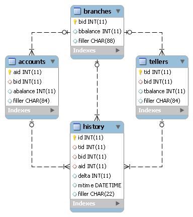

TPC-B とは、 TPC によって策定されたベンチマーク仕様の一つです。銀行の窓口業務をモデルにしたトランザクションを実行し、システムの性能を測定します。データベースのER図を以下に示します。
TPC-Bでは1種類のトランザクションが定義されています。これは以下のSQLを順番に発行するものです。
UPDATE accounts SET abalance = abalance + :1 WHERE aid = :2;
SELECT abalance FROM accounts WHERE aid = :1;
UPDATE tellers SET tbalance = abalance + :1 WHERE aid = :2;
UPDATE branches SET bbalance = abalance + :1 WHERE aid = :2;
INSERT INTO history (aid, aid, aid, delta) VALUES (:1, :2, :3, :4);
COMMIT;
TPC-BのCRUD図を以下に示します。TPC-Bには更新の割合が非常に高いという特徴があります。
| Transaction | branches | tellers | accounts | history |
|---|---|---|---|---|
| TPC-B | U | U | RU | C |
Tiny TPC-Bは、TPC-B Standard Specification 2.0の仕様を抜粋しJdbcRunnerのスクリプトとして実装したものです。仕様書のうち以下の章節を実装しています。
それ以外の章節については実装されていないか、仕様を満たしていません。従ってTiny TPC-Bのテスト結果は正式なTPC-Bのスコアではありません。
Tiny TPC-Bは以下の二つのスクリプトから構成されています。
Tiny TPC-Bは以下のRDBMSに対応しています。
RDBMSのバージョンは実際に動作確認を行ったバージョンを示しており、これ以外のバージョンでも動作する可能性はあります。
MySQLにおけるテストの準備手順を以下に示します。Oracle Database、PostgreSQLについてはscripts/tpcb_load.jsのコメントをご参照ください。
MySQLにrootユーザで接続し、tpcbユーザを作成します。
> mysql -u root
mysql> GRANT ALL PRIVILEGES ON tpcb.* TO tpcb@'%' IDENTIFIED BY 'tpcb';
Query OK, 0 rows affected (0.00 sec)
ネットワーク環境によっては、接続元ホストを制限したりtpcbをより安全なパスワードに変更することをおすすめします。
tpcbデータベースを作成します。
mysql> CREATE DATABASE tpcb;
Query OK, 1 row affected (0.00 sec)
scripts/tpcb_load.jsを用いてテストデータの生成を行います。このスクリプトは以下の処理を行っています。
> java JR scripts\tpcb_load.js
02:35:34 [INFO ] > JdbcRunner 1.2
02:35:34 [INFO ] [Config]
Program start time : 20111011-023534
Script filename : scripts\tpcb_load.js
JDBC driver : -
JDBC URL : jdbc:mysql://localhost:3306/tpcb?rewriteBatchedStatements=true
JDBC user : tpcb
Load mode : true
Number of agents : 4
Auto commit : false
Debug mode : false
Trace mode : false
Log directory : logs
Parameter 0 : 0
Parameter 1 : 0
Parameter 2 : 0
Parameter 3 : 0
Parameter 4 : 0
Parameter 5 : 0
Parameter 6 : 0
Parameter 7 : 0
Parameter 8 : 0
Parameter 9 : 0
02:35:35 [INFO ] Tiny TPC-B 1.1 - data loader
02:35:35 [INFO ] -param0 : Scale factor (default : 16)
02:35:35 [INFO ] -nAgents : Parallel loading degree (default : 4)
02:35:35 [INFO ] Scale factor : 16
02:35:35 [INFO ] Parallel loading degree : 4
02:35:35 [INFO ] Dropping tables ...
02:35:35 [WARN ] JavaException: com.mysql.jdbc.exceptions.jdbc4.MySQLSyntaxErrorException: Unknown table 'history'
02:35:35 [WARN ] JavaException: com.mysql.jdbc.exceptions.jdbc4.MySQLSyntaxErrorException: Unknown table 'accounts'
02:35:35 [WARN ] JavaException: com.mysql.jdbc.exceptions.jdbc4.MySQLSyntaxErrorException: Unknown table 'tellers'
02:35:35 [WARN ] JavaException: com.mysql.jdbc.exceptions.jdbc4.MySQLSyntaxErrorException: Unknown table 'branches'
02:35:35 [INFO ] Creating tables ...
02:35:35 [INFO ] Loading branch id 1 by agent 1 ...
02:35:35 [INFO ] Loading branch id 2 by agent 2 ...
02:35:35 [INFO ] Loading branch id 3 by agent 0 ...
02:35:35 [INFO ] Loading branch id 4 by agent 3 ...
02:35:44 [INFO ] Loading branch id 5 by agent 1 ...
02:35:56 [INFO ] Loading branch id 6 by agent 3 ...
02:36:04 [INFO ] Loading branch id 7 by agent 0 ...
02:36:04 [INFO ] Loading branch id 8 by agent 2 ...
02:36:10 [INFO ] Loading branch id 9 by agent 3 ...
02:36:10 [INFO ] Loading branch id 10 by agent 1 ...
02:36:13 [INFO ] Loading branch id 11 by agent 2 ...
02:36:15 [INFO ] Loading branch id 12 by agent 0 ...
02:36:19 [INFO ] Loading branch id 13 by agent 1 ...
02:36:20 [INFO ] Loading branch id 14 by agent 3 ...
02:36:23 [INFO ] Loading branch id 15 by agent 2 ...
02:36:26 [INFO ] Loading branch id 16 by agent 0 ...
02:36:53 [INFO ] Completed.
02:36:53 [INFO ] < JdbcRunner SUCCESS
「Unknown table ‘history’」などの警告は、存在しないテーブルを削除しようとして出力されるものです。無視して構いません。
-param0を指定することによって、スケールファクタを変更することが可能です。スケールファクタ1あたり、branchesテーブルが1レコード、tellersテーブルが10レコード、accountsテーブルが10万レコード増加します。デフォルトのスケールファクタは16です。
-nAgentsを指定することによって、ロードの並列度を変更することが可能です。RDBMSがCPUスケーラビリティに優れておりクアッドコアなどCPUコア数の多い環境では、並列度を上げることでロード時間を短縮することができます。デフォルトの並列度は4です。
> java JR scripts\tpcb_load.js -nAgents 8 -param0 100
scripts/tpcb.jsを用いてテストを実行します。JdbcRunnerを動作させるマシンは、テスト対象のマシンとは別に用意することを強くおすすめします。
Oracle Java SE/OpenJDKを利用する際は、Server VMを用いることをおすすめします。詳細は JDK 6 仮想マシン (VM) 関連 API & 開発者ガイド をご参照ください。
> java -server JR scripts\tpcb.js -jdbcUrl jdbc:mysql://server/tpcb
02:40:05 [INFO ] > JdbcRunner 1.2
02:40:05 [INFO ] [Config]
Program start time : 20111011-024004
Script filename : scripts\tpcb.js
JDBC driver : -
JDBC URL : jdbc:mysql://server/tpcb
JDBC user : tpcb
Warmup time : 60 sec
Measurement time : 180 sec
Number of tx types : 1
Number of agents : 16
Connection pool size : 16
Statement cache size : 10
Auto commit : false
Sleep time : 0 msec
Throttle : - tps
Debug mode : false
Trace mode : false
Log directory : logs
Parameter 0 : 0
Parameter 1 : 0
Parameter 2 : 0
Parameter 3 : 0
Parameter 4 : 0
Parameter 5 : 0
Parameter 6 : 0
Parameter 7 : 0
Parameter 8 : 0
Parameter 9 : 0
02:40:06 [INFO ] Tiny TPC-B 1.1
02:40:06 [INFO ] Scale factor : 16
02:40:06 [INFO ] Truncating history table...
02:40:07 [INFO ] [Warmup] -59 sec, 659 tps, (659 tx)
02:40:08 [INFO ] [Warmup] -58 sec, 759 tps, (1418 tx)
02:40:09 [INFO ] [Warmup] -57 sec, 933 tps, (2351 tx)
02:40:10 [INFO ] [Warmup] -56 sec, 1248 tps, (3599 tx)
02:40:11 [INFO ] [Warmup] -55 sec, 1291 tps, (4890 tx)
...
02:44:02 [INFO ] [Progress] 176 sec, 1518 tps, 216989 tx
02:44:03 [INFO ] [Progress] 177 sec, 730 tps, 217719 tx
02:44:04 [INFO ] [Progress] 178 sec, 1725 tps, 219444 tx
02:44:05 [INFO ] [Progress] 179 sec, 785 tps, 220229 tx
02:44:06 [INFO ] [Progress] 180 sec, 1436 tps, 221665 tx
02:44:06 [INFO ] [Total tx count] 221663 tx
02:44:06 [INFO ] [Throughput] 1231.5 tps
02:44:06 [INFO ] [Response time (minimum)] 4 msec
02:44:06 [INFO ] [Response time (50%tile)] 10 msec
02:44:06 [INFO ] [Response time (90%tile)] 18 msec
02:44:06 [INFO ] [Response time (95%tile)] 22 msec
02:44:06 [INFO ] [Response time (99%tile)] 41 msec
02:44:06 [INFO ] [Response time (maximum)] 821 msec
02:44:06 [INFO ] < JdbcRunner SUCCESS